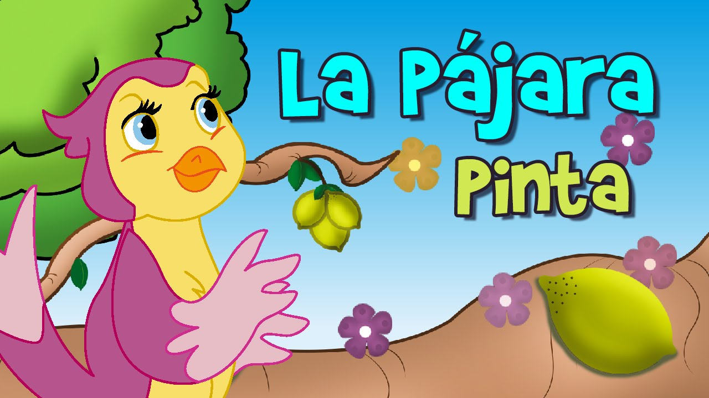

La Leyenda de la Pájara Pinta

La Pájara Pinta es una criatura mítica que, según las historias, habita en los bosques más profundos y antiguos. Se la describe con plumas de colores vibrantes que cambian con la luz, y su canto es tan hermoso que se dice que puede sanar el corazón de quienes lo escuchan. Simboliza la sabiduría, la alegría y la libertad. Su leyenda ha inspirado a generaciones de poetas, artistas y soñadores, recordándonos la magia que se esconde en la naturaleza y en nuestras propias palabras.